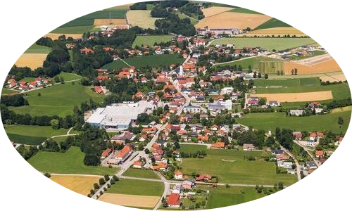
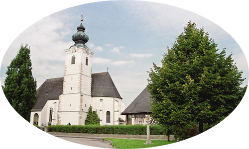

WEIBERN

Die Gemeinde Weibern liegt im Alpenvorland, in einem Senkungsraum zwischen der nördlichen böhmischen
Masse (Granit und Gneis = Urgestein) und den Kalkalpen. Diese trogförmige Senke wurde von Westen her
vom Weltmeer
vor urdenklichen Zeiten überflutet.
Mehr als die Hälfte unseres Gemeindegebietes weist als Untergrund Schlier auf. In der Eiszeit haben
sich in den Alpen gewaltige Gletscher gebildet, deren Zungen sich bis in das Alpenvorland heraus
schoben,
wobei die Gebirgstäler und zahlreiche Seebecken ausschürften.
Die alljährlichen Schmelzwässer verfrachteten die von den Gletschern abgetragenen Steine und die vom
Eis zerriebenen Feinstteilchen in das Alpenvorland, wodurch auch in unserer Gemeinde ausgedehnte
Schotterflächen, so der Hart unterhalb Parz und das Dirisamer Steinfeld, entstanden.
Vor
Jahrmillionen hat die Trattnach das Gebiet um Weibern maßgeblich gestaltet, so ist sie auch heute
noch dessen
Lebensnerv.
Die Geschichte der Gemeinde Weibern reicht in die Steinzeit zurück.
Wenn wir auch nicht wissen, wie Weibern zur Zeit der Illyrer und Kelten geheißen hat, so konnte doch
festgestellt werden, dass schon in jenen Zeiten unsere Gegend bevölkert war. Die Römer nannten
diesen Ort „Vivarium". In diesem Wort ist kein Personenname enthalten, es ist die Bezeichnung für
eine Sache,
eine Einrichtung, die sicher schon in die vorrömische Zeit zurückreicht.

Das ahd. Wort uuiuuari oder wiwari hat seine Wurzel im lateinischen vivus (lebendig), vivere
(leben), zu dem auch Vivarium gehört. Dies heißt ganz allgemein Behälter oder Gehege für lebende
Tiere.
Der Geschichtsforscher Kranzmayer weist ausdrücklich darauf hin, dass Weibern eine Sachbezeichnung
ist und weit weg von Oberösterreich ins Deutsche gekommen sein dürfte.
Da noch keine Siedlungsspuren aufgedeckt wurden, kann auch nicht gesagt werden, ob unser Vivarium
während der Römerzeit eine dörfliche Ansiedlung war, oder nur aus einem einzelnen
landwirtschaftlichen
Gutshof, einer „Villa Rustica", bestand.
Ein Flachbeil aus Stein, das in oder um Dirisam gefunden wurde, ist der älteste Fund. Es stammt aus
der Mondseekultur, sein Alter ist damit auf vier- bis fünftausend Jahre anzusetzen. Es befindet sich
im
Naturhistorischen Museum in Wien.
Der Besitzkomplex von „dratihaha uuiuuari" wird das erste Mal 785 in einer Urkunde genannt. Dieses
kostbare Schriftstück existiert im Original leider nicht mehr, wohl aber in einer Abschrift, die im
bischöflichen Traditionsbuch des Hochstiftes St. Stephan in Passau enthalten ist.
Dieses Buch liegt
seit 1803 im
heutigen Bayrischen Hauptstaatsarchiv in München, wo es unter der Signatur "Hochstift Passau Lit.1"
mit der
Nebenbezeichnung "Codex antiquissimus" (älteste Handschrift) verwahrt und zu den wertvollsten
Schätzen gezählt wird.